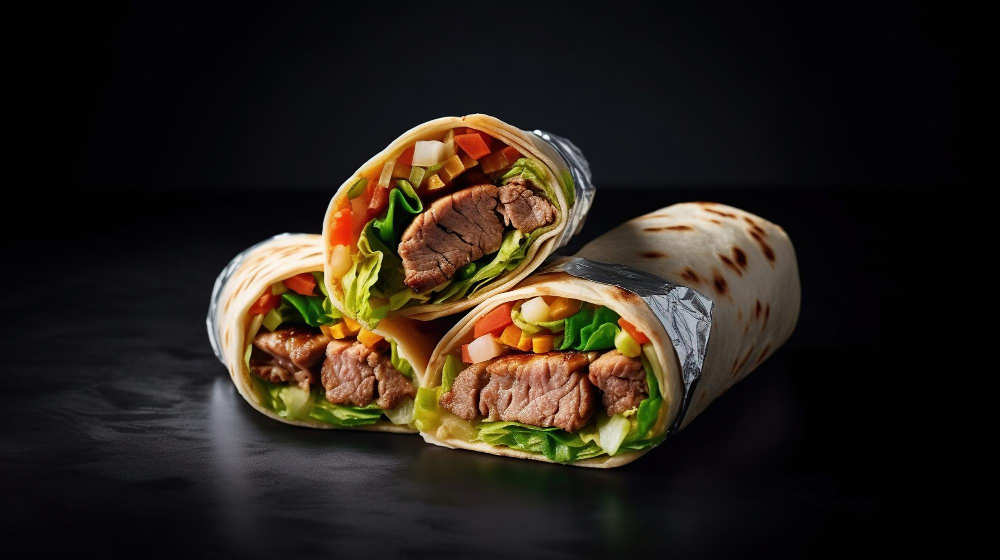

Perfect Pancakes
Serve these pancakes with butter and syrup, or up the ante with toppings such as sprinkles, chopped bittersweet chocolate, and sliced or chopped fruit for a perfect breakfast.
See More
Waffle House-Style Waffles
If you're craving Waffle House waffles try this easy copycat recipe - you won't taste the difference. Serve with maple syrup, butter, and chocolate chips.
See More


Basted Eggs
This recipe produces a delicious, simple egg with satisfying, set whites and a creamy, runny yolk. It's similar to a poached egg, but more flavorful and less fussy.
See More